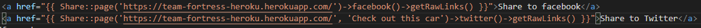

I was only given one user story to finish for this sprint, this was the social media sharing features. In order to implement this feature, I made use of a laravel dependency called laravel-share. This wasn't the first option I investigated implementing, as I attempted to implement it with a dependency called social-share and then a cdn link. but I struggled to get it working with the way we had designed our current website as from my understanding, it wanted to be called in the routes of laravel app, and another function was already being called. The cdn link worked to import the icons for each website, but it would only take the user to the home page of each social media site, and you couldnt provide a link to the current users page. I then found laravel-share which could be called from with the template and you could provide a link to the current page in the method call. This was far better for our purposes.
This sprint was quite hectic as I had two assignment hand in's in other classes that called for the majority of my attention. Because of this, software engineering was largely put on the back burner, untill I had completed at least one of my other classes assignments
I succesfully implemented what I learnt from the previous sprint, if I hadn't decided to cut my loses and move onto investigating other ways of implementing then I would likely have run out of time given my other pressing deadlines. It is quite satisfying identifying a problem in previous sprints and then implementing it succesfully in later sprints.
I could have aimed to be more positive in regards to the change of topic. This has lowered our team morale significantly and I cant say that I haven't whinged about the lost progress. This has had an affect on the quality of work in regards to this project, as my focus is turning away from it towards other projects.
I feel that my technical contributions this sprint was lacking. While I completed all the tasks I was assigned, only doing one task for the entire sprint feels disappointing. I'm unsure how I could have improved on this given my schedule for this sprint, but I will need to remember this feeling as we come into the final sprint as I need to keep pace to finish strong and not putter out. So I guess the lesson in this is that keeping the amount of work completed per sprint to a similar amount is better as you feel like you have contributed to the team more, and this will give you the encouragement to keep up that level of work effort. The same is also true so I will have to keep that in mind in the final sprint.
The primary barrier in this sprint was the amount of time I had available to work this week. Because of other classes deadlines, I had to prioritse my time, and aim to be as effiecent as possible. I overcame this barrier by simply putting in more hours than I usually would to ensure that I meet all deadlines while continuing my work in software engineering